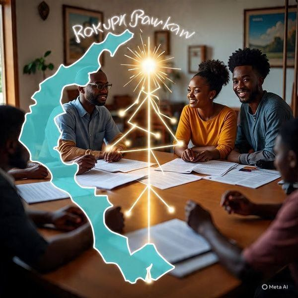
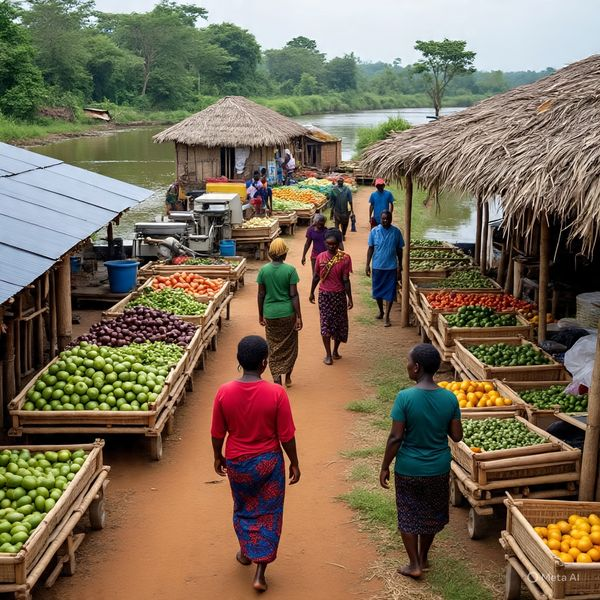
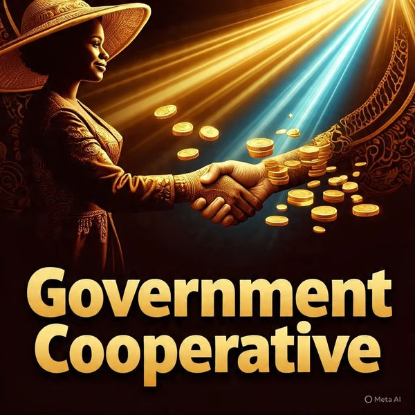
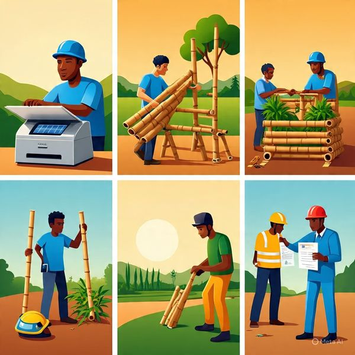
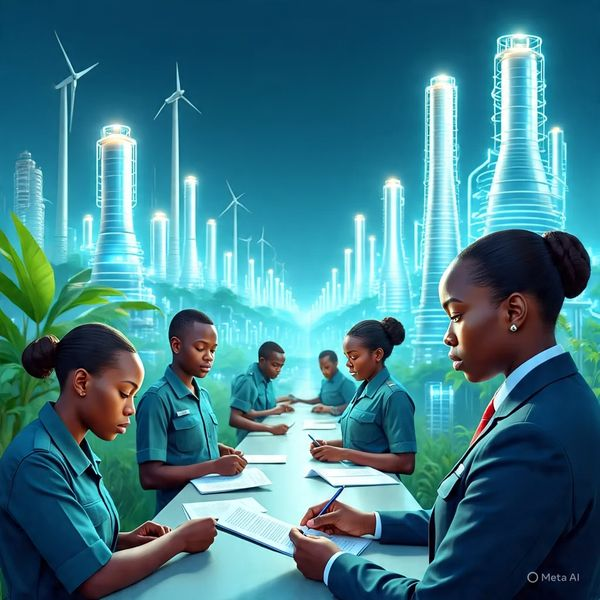
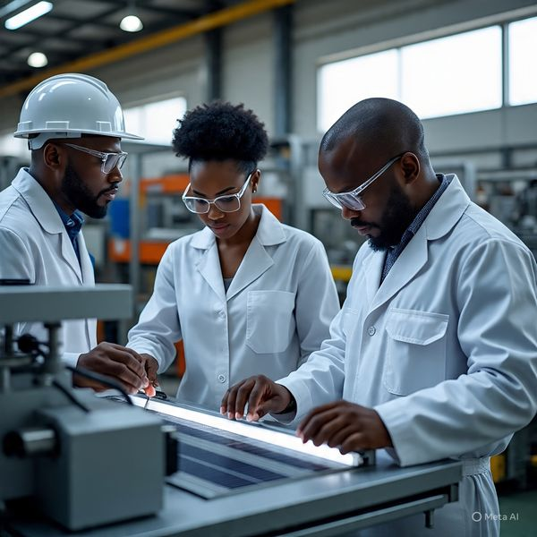
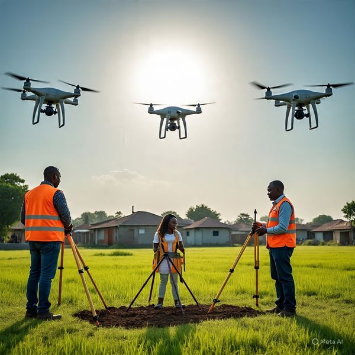
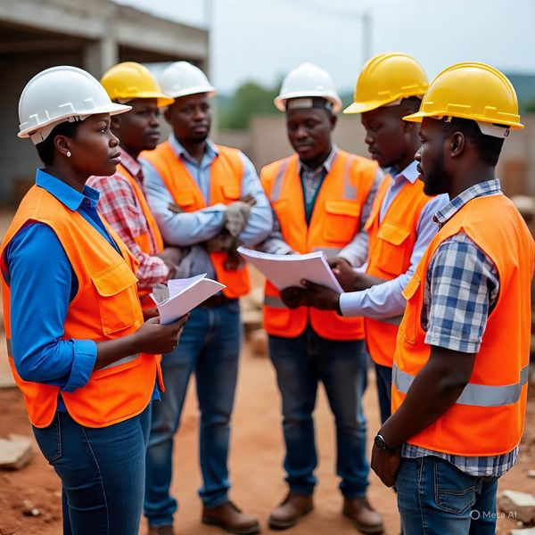
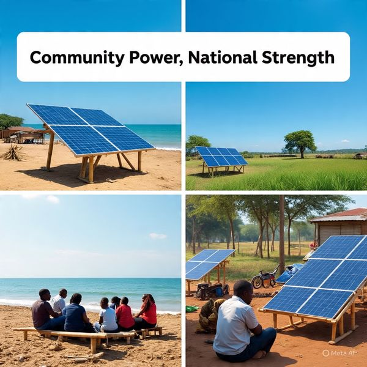

Solar Sierra Leone
Founder: Mohamed Malik Turay · superpersonality.ai@outlook.com · +232-74-951-150
Pitch
Overview
BawBaw
Rokupr
Revenue
Cooperative
Ministries
Benefits
Guarantees
Energy
Works
Agriculture
Lands
Labor
Implementation
2-Minute Verbal Pitch
Chief Minister Overview

BawBaw — Coastal Hub
Rokupr — Rural Node

Government Revenue & Profit
Cooperative Ownership

Ministries’ Roles

Strategic Benefits

Guarantees & Accountability
Ministry of Energy

Ministry of Works
Ministry of Agriculture
Ministry of Lands

Ministry of Labor

Site Implementation
